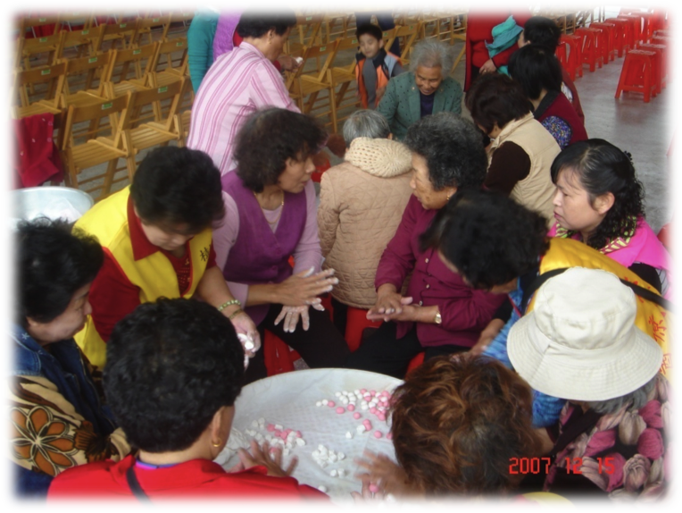
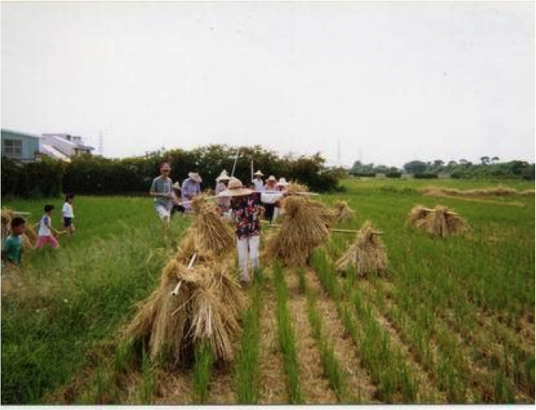
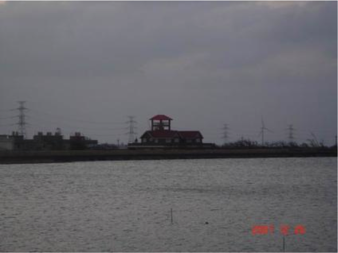
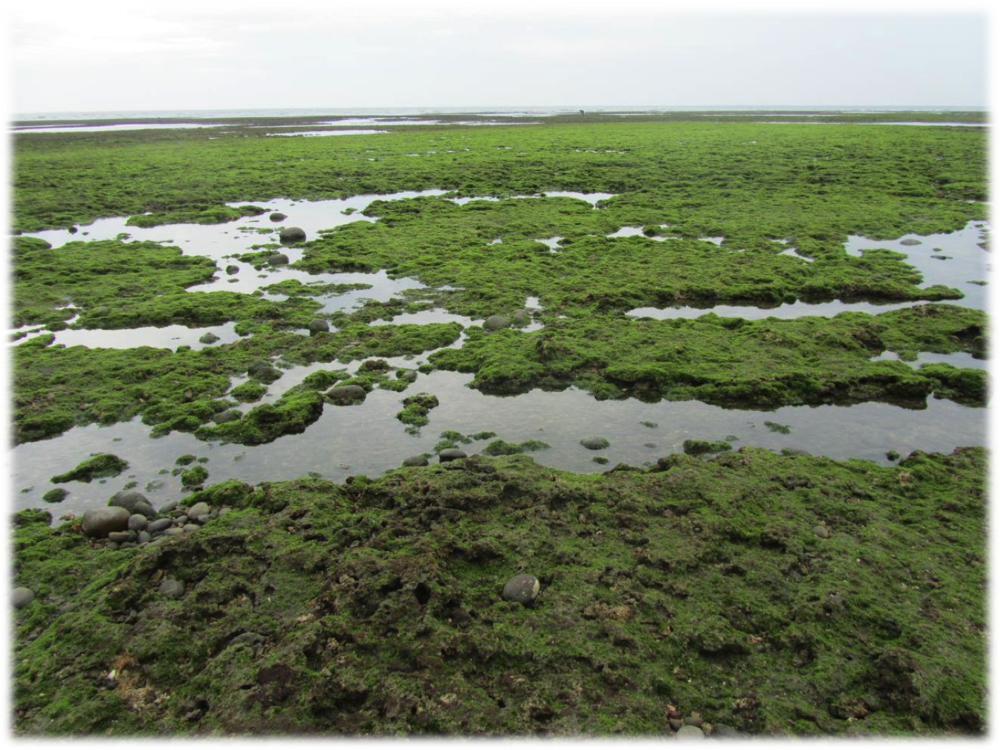
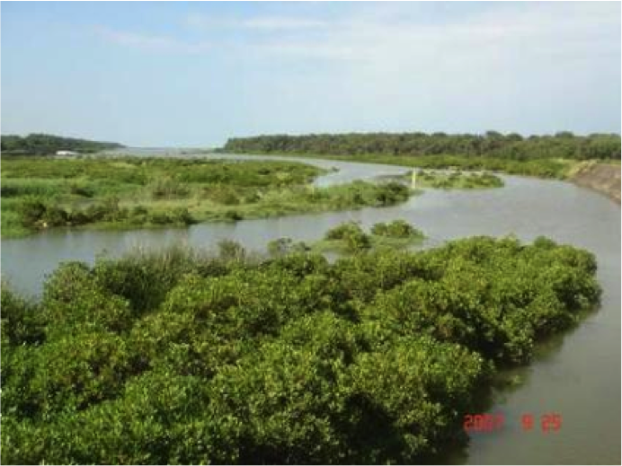
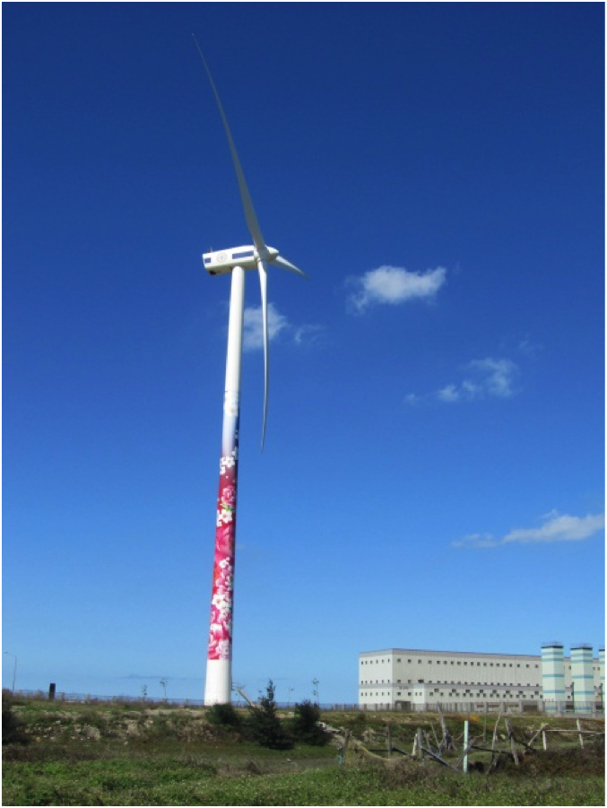
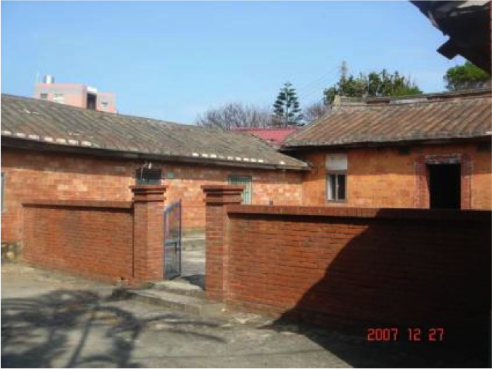

| 社區人口 |  | |
人口高齡化是農村常見的現象，本社區總人口數2411人、771戶，本村百分之90以上是客家人。因大潭工業區開發徴收原住戶搬移他處，因此1-5鄰戶數銳減。
保生村是典型農村社區，由於工業社區發展使得人口外流，老人留居家鄉，老年人口增加，年輕人外出工作，只有假日或晚上才回家。
老年人絕大部分兒時是在此地成長，年輕時在此地務農，農業休耕政策多年無耕種。
|
||
| 社區產業 |  | |
現有產業仍是以稻米耕作或休耕的空曠土地為主。
花卉苗圃、休閒農園、民宿、瓜果蔬菜栽培與埤塘水產養殖等較具有特色的產業經營。
|
||
| 自然資源 | ||
| 
埤塘 |
候鳥聚集 |
|
| 
藻礁海岸 |

水筆仔濕地生態 |
|
| 
新地景：綠色潔能的風力發電機 |

古厝三合院 |
|
| 桃園縣觀音鄉保生社區 / tel. 03-4731586 03-4736138 / mail. jin.lc@seed.net.tw | ||